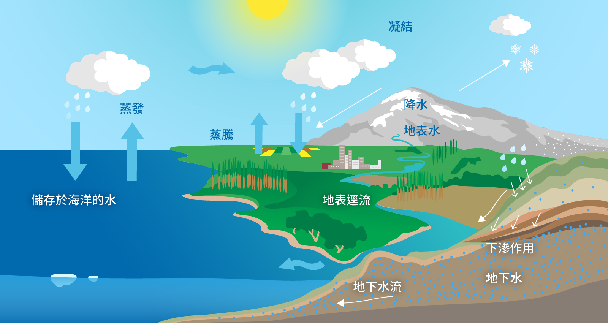

地球上的水文循環可由海洋中水的蒸發作用開始說明。海洋中的水吸收太陽輻射能量之後，由液態水轉變成氣態的水氣，經由空氣運動輸送至陸地上，再經過凝結作用變為雨、雪等降水形式降落至地面。
降落至地面的水分為三個部分進行：
一、 第一個部分：入滲至地下的土壤中變為土壤水或地下水。
二、 第二個部分：由植物的蒸散作用或由土壤的蒸發作用回到大氣中。
三、 第三個部分：在地表面產生漫地流或地表逕流。
地表逕流部分會暫時蓄存在湖泊或沼澤中，但大多最終流回到海洋。由地表下方入滲的地下水最後也會注入河川中，使得地表的河川變為常流河。這整個過程即稱為水文循環，或簡稱為水的循環或水循環。
水文循環 hydrologic cycle
水從大氣到地面返回大氣的過程。
蒸散作用 transpiration
透過植物的水分運動和從植物表面蒸發的過程。
蒸發作用 evaporation
指水分由液體變成水蒸氣的過程。
凝結作用 condensation
指氣體遇冷形成液體的過程。
降水 precipitation
指在大氣中凝結的水氣以不同方式下降到地球表面的天氣現象。
土壤水 soil moisture
凡在土壤中的水均稱為土壤水。
地下水 groundwater
指流動或停滯於地面以下之水，通常存在於飽和含水的土壤及岩石孔隙或裂隙中。
地表逕流 surface runoff
經由土壤表面流至河川的水及陸地表面流動的水。
漫地流 overland flow
為地表逕流的一種。發生於下坡段及凹坡地形，沿著山坡地流動，將水流堆積到坡腳位置，造成土壤含水飽和（即土壤的孔隙塞滿水），而出滲成為地面水流，在坡面上流動。
常流河 perennial river
一年四季皆有流水的河流稱為常流河